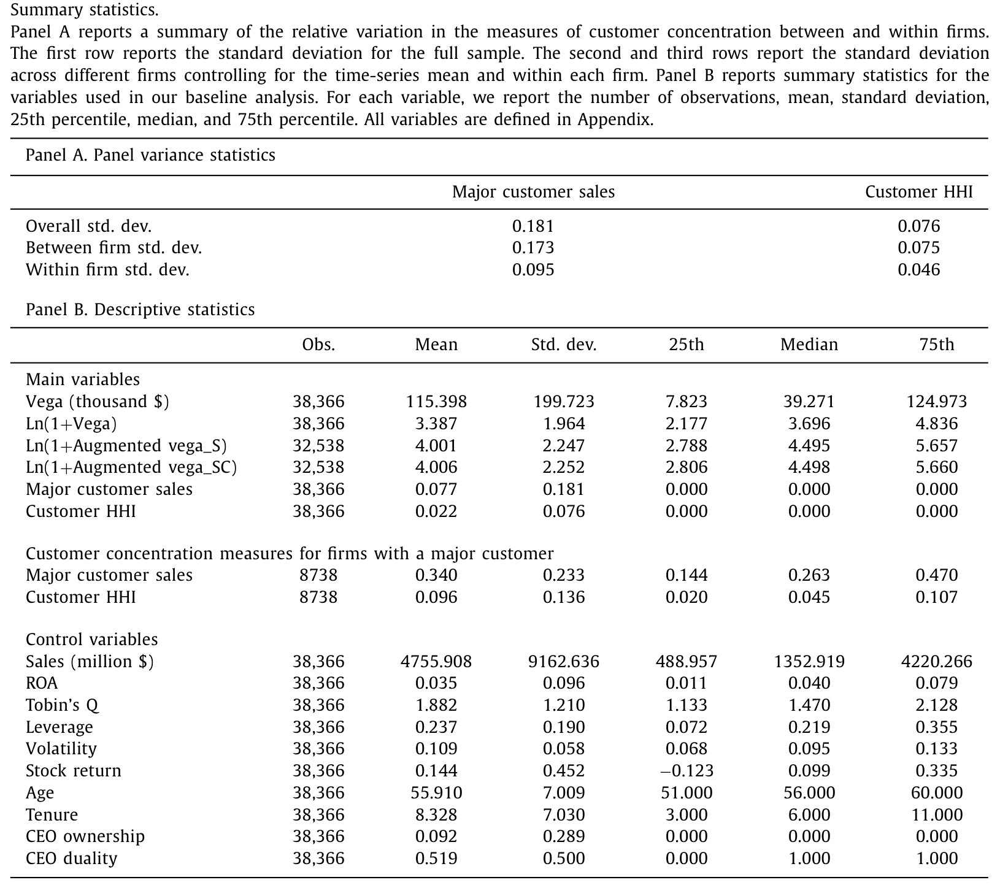
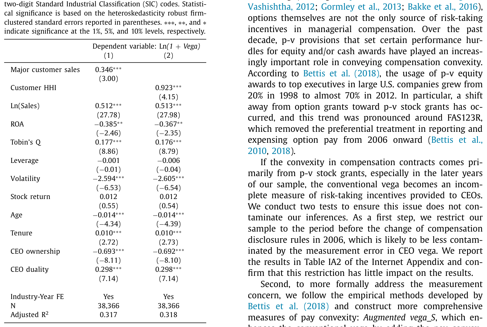
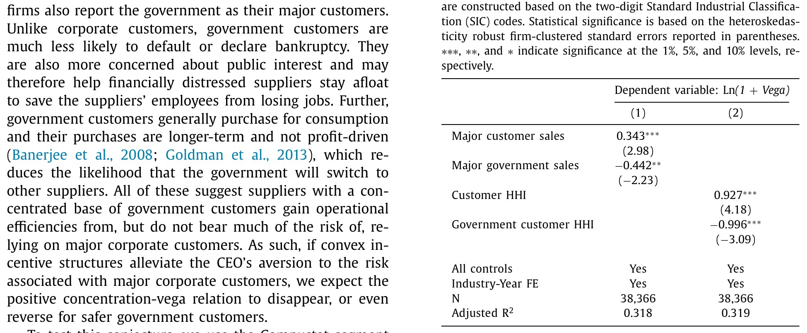
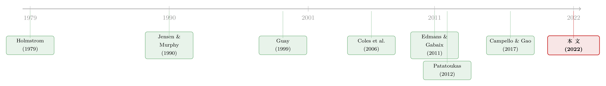

几个大客户，怎样把「赌性」写进了 CEO 的工资条
本文读的是 Chen, Su, Tian & Xu (2022, Journal of Financial Economics)：当一家供应商的客户基础越集中、越依赖少数几个大客户时，董事会反而会在 CEO 的薪酬包里塞进更多「赌性」——也就是更高的 vega（薪酬对股价波动率的敏感度）。这不是疏忽，而是一种有意的对冲：用 vega 去抵消一个风险厌恶的 CEO 面对「鸡蛋放在一个篮子里」的客户结构时本能的保守，免得他为了避险而放弃了对公司有价值、但风险偏高的项目。
1 引言：一份「鼓励冒险」的工资条
我们对高管薪酬最朴素的直觉，是「激励对齐」：让 CEO 的身家随着股价一起涨跌，他自然会替股东卖力。这套逻辑可以一路追溯到莫里斯 (Mirrlees, 1976) 和霍姆斯特罗姆 (Holmstrom, 1979) 关于道德风险 (moral hazard) 的经典框架，再到 Jensen and Murphy (1990) 那句广为流传的「pay for performance」。
但薪酬合约里其实藏着第二个维度，远没有那么直观。
一个持有大量本公司股票和期权、人力资本又高度绑定在这家公司上的 CEO，本质上是个没法分散风险的人。股东可以买一篮子股票把特质风险摊薄掉，CEO 不能——他的财富和声誉都押在这一家公司身上。于是，面对一个高风险但正 NPV 的项目，一个理性的、风险厌恶的 CEO 完全可能选择不做：项目成了，收益归大家；项目砸了，他个人的损失却格外惨重。这就是所谓的「过度保守」(managerial conservatism)，是道德风险问题的另一张面孔。
怎么纠正这种保守？答案是给薪酬注入凸性 (convexity)。期权这类工具的妙处在于：股价涨得越高赚得越多，跌破行权价却最多归零。这种「赢面无限、输面有底」的结构，会让风险本身对 CEO 变得「值钱」，从而鼓励他去冒险。衡量这种凸性的指标，就是 vega——CEO 财富对股票收益波动率的敏感度。（关于高管手里这份「波动率期权」的两面性，可参见《高管手里的「波动率期权」，为什么只在寒冬里咬人？》。）
故事讲到这里，本文抛出的那个张力就出来了：
如果一家公司的风险，主要来自它对少数几个大客户的依赖，董事会会怎么调 CEO 的 vega？
这是个很「供应链」的问题，却第一次被认真地接到了高管薪酬这条线上。
2 为什么是「客户」？——把供应链风险翻译成薪酬语言
依赖大客户，是一把双刃剑。一方面，跟大客户建立长期、稳固的交易关系，能帮供应商占住一个更强的竞争位置 (Patatoukas, 2012)；但另一方面，把很大一块销售押在少数几个客户身上，本身就是供应商一个实打实的风险来源。
这种风险有多具体？大客户一旦陷入财务困境、破产、转投别家供应商，或者干脆改了产品线，供应商就可能遭受重创 (Hertzel and Officer, 2012; Kolay et al., 2016)。更要命的是，为了维系这种双边关系，供应商往往要做关系专用性投资 (relationship-specific investment, RSI)——这些投资风险很高，一旦关系破裂，几乎没法挪作他用 (Rauch, 1999; Kale and Shahrur, 2007)。
接着，一个自然的问题是：这种客户风险，对分散化的股东而言其实无所谓——它大体是特质性的，能被组合分散掉。但对那个人力资本绑死在公司上的 CEO 而言，它是真真切切、躲不掉的风险。于是逻辑闭环就出现了：
客户越集中 → CEO 面对的不可分散风险越大 → 风险厌恶的 CEO 越想保守避险 → 为防止他错过有价值的冒险，董事会越应该提高他薪酬里的凸性（vega）。
这套机制，本文借的是 Edmans and Gabaix (2011) 的理论模型来形式化：当公司（客户）风险更高时，最优的做法恰恰是给 CEO 更多的凸性，去抵消他的风险厌恶、诱使他去做创造价值的高风险项目。由此本文给出核心假设——客户集中度与供应商 CEO 的 vega 正相关。
注意，这是一个反直觉的方向：风险更高的环境，对应的不是「少给点期权让他别乱来」，而是「多给点凸性让他别太怂」。
3 识别策略：一个看似简单、却处处是坑的回归
本文的基准设定，是一个供应商—年度层面的面板回归：
$$ \ln(1+Vega)_{i,t} = \alpha + \beta\cdot CustomerConcentration_{i,t} + \gamma\cdot Control_{i,t} + Industry\text{-}year_{i,t} + \varepsilon_{i,t} $$
把这个方程里每一块的含义拆开来看：
这里有两个不起眼、却很关键的设计选择。
第一，为什么用「行业×年份」固定效应，而不是公司固定效应？ 答案藏在数据本身。本文在 Table 1 里做了一个组间—组内方差分解：Customer HHI 的组内（within-firm）标准差只有 4.6%，而组间（between-firm）标准差有 7.5%；Major customer sales 的组内标准差 9.5%，组间则高达 17.3%。

Table 1
也就是说，客户集中度的变异绝大部分来自公司之间的横截面，而非公司自身随时间的变化。这跟 Dhaliwal et al. (2016)、Campello and Gao (2017)、Cen et al. (2017) 的观察一致：在这种情形下硬塞公司固定效应，等于把识别所依赖的那点变异也一并吃掉了，反而得不偿失。于是本文转而用行业×年份固定效应，去吸收那些「随行业和年份共同变动」的遗漏变量。
第二，怎么定义「客户集中度」？ 本文恪守一条客观的 10% 红线：根据 SFAS No. 14（1997 年前）和 FAS No. 131（1997 年后）的披露规则，公司必须报告任何贡献了总营收 10% 及以上的客户。本文只采用这些「大客户」，刻意排除了那些公司自愿披露的、占比不到 10% 的小客户。理由很扎实：自愿披露本身是内生的（公司会在竞争压力下选择藏或不藏，Ellis et al., 2012），把它们纳进来会引入一个随竞争程度变化的样本选择偏差。两个度量分别是：
Major customer sales：所有大客户贡献的销售额占供应商总销售额的比例（沿用 Banerjee et al., 2008; Dhaliwal et al., 2016）；Customer HHI：基于大客户销售额构造的赫芬达尔指数 (Patatoukas, 2012)，
$$ CustomerHHI_{it} = \sum_{j=1}^{J}\left(\frac{Sales_{ijt}}{Sales_{it}}\right)^2 $$
其中 \(Sales_{ijt}\) 是供应商 \(i\) 在 \(t\) 年卖给大客户 \(j\) 的销售额，\(Sales_{it}\) 是 \(i\) 的总销售额。该指数介于 0 与 1 之间，越高代表客户越集中。
4 数据与基准结果
样本的拼图是这样搭起来的：以 ExecuComp 中 1992–2018 年提供 CEO 薪酬信息的公司为起点，接上 Compustat Segment Customer 文件里的客户—供应商数据，再并入 Compustat 的财务数据、CRSP 的股价数据和 ExecuComp 的 CEO 特征。所有连续变量在 1% 和 99% 分位缩尾。最终样本是 3474 家公司、38,366 个公司—年度观测。
vega 本身沿用文献的标准定义 (Guay, 1999; Core and Guay, 2002; Coles et al., 2006)：当公司股票年化收益率标准差上升 0.01 时，CEO 财富价值的变化。
基准回归的结论干净利落：两个客户集中度度量，都与供应商 CEO 的 vega 显著正相关。换句话说，越是把身家押在少数几个大客户上的公司，越倾向于给 CEO 一份「鼓励冒险」的工资条。

Table 2
这个结果对一长串稳健性检验都站得住：换用其他的风险激励度量、换用其他的客户集中度度量、换不同的样本期和子样本，乃至控制薪酬合约里的现金激励与业绩激励，结论都不变。特别地，本文还按 Bettis et al. (2018) 的方法，构造了一个把近年来越来越流行的业绩归属 (performance-vesting, p-v) 股票授予的凸性也算进去的、更全面的 vega——结果依然成立。
5 内生性：把「相关」逼成「因果」
到这里，一个老练的读者一定会皱眉：这顶多是相关，凭什么说是因果？遗漏变量可能同时驱动客户结构和 vega；反过来，也可能是高 vega 先把 CEO 变得敢冒险，他再去选了一个更集中的客户基础。本文为此排了四道关卡：
首先，倾向得分匹配 (propensity score matching, PSM)。 把「至少有一个大客户」的公司—年度，与各方面都难以区分、但没有大客户的公司—年度配对。匹配之后，高客户风险的公司仍然对应更高的 CEO vega。
接着，一个自然的应对反向因果的办法，是只看新上任的 CEO。 新 CEO 来的时候，客户结构早已既定，他既没机会去重塑客户基础，也没机会去左右自己的薪酬合约。结果在这个子样本里依旧稳健。
然后是工具变量 (instrumental variable, IV)。 本文沿着 Campello and Gao (2017)、Gutiérrez and Philippon (2017) 等人的思路，为客户集中度构造了两个工具：
Customer industry M&A：客户所在行业的并购强度；Customer regulation index：客户所在行业总体监管限制的强度指数。
两者都能改变供应商的客户集中度（满足相关性条件），却很难直接影响供应商 CEO 的薪酬合约（合理地满足排他性约束）。用工具变量「洗」过之后的客户集中度，对 CEO vega 仍然有显著的正向效应。
但真正关键的一步，是直面反向因果的另一种可能：会不会是激励结构先被设定好、去诱导某种投资行为，而这种投资反过来改变了客户的产品市场集中度？本文用两个办法回应。其一，剔除销售额最大的那批供应商——大公司才更有市场力量和动机去主动影响客户的产品市场，也更容易被这种反向因果污染；剔除之后结果照旧。其二，沿用 Cen et al. (2017) 的做法，盯住新建立的大客户关系这一事件：CEO 的 vega 在关系建立之后显著、且大幅上升，而在事件之前完全看不到这种走势。这种「事后才动、事前不动」的模式，几乎堵死了反向因果的解释。
本文很诚实地承认：任何单一的检验都可能被另一种解释攻破。它真正的说服力，在于这些证据叠加起来后，很难再被某个统一的备择假说一并解释——要找到一个能在所有横截面维度上、把结果统统朝同一方向带偏的遗漏变量，是极其困难的。这是实证里「以量取胜」的典型策略。
6 横截面：机制对不对，看它在哪儿更强
如果上面的机制是对的，那么效应就该在「最需要这套机制的地方」更强。本文沿着这个思路做了一组漂亮的横截面检验：
- 当 CEO 本就更不愿冒险时，效应更强。年长的 CEO（相比年轻 CEO，缺乏 Prendergast and Stole, 1996 所说的职业生涯冒险动机）、专才型 CEO（相比 generalist，外部选择更窄、更怕冒险，Custódio et al., 2013; Mishra, 2014）——在这两类人身上，客户集中度推高 vega 的效应都更显著。董事会显然是在「对症下药」。
- 当公司投资机会更多时（用 Tobin's q 度量），效应更强。因为此时 CEO 一旦过度保守、错过项目，公司的损失就更大，越值得用 vega 去纠偏。
- 当损失大客户的代价更高时，效应更强：客户转换供应商的成本越低（用供应商所在行业的市场份额度量）、供应商的 RSI 越高（用 R&D 强度度量），客户风险就越大，客户集中度对 vega 的拉动也越明显。
这些方向高度一致地指向同一个故事：董事会是在用额外的风险激励，去对冲 CEO 对「收入来源不分散」的厌恶，从而避免他以牺牲公司价值为代价的过度保守。
7 反转：换成「政府」这个大客户，符号就翻了
到这里，机制听上去已经很完整。但全文最精彩的一笔，是最后那个反转。
供应商不只依赖企业客户，也可能高度依赖政府客户。可政府这个「大客户」和企业客户有本质不同：政府几乎不会违约或破产，采购周期更长、也不完全以盈利为导向 (Banerjee et al., 2008; Goldman et al., 2013)。一句话——政府客户是个安全得多、稳定得多的收入来源。
那么按本文的机制推下去：如果客户集中带来的是「收入流不稳定」的风险，而政府客户恰恰消除了这种不稳定，那么一个集中的政府客户基础，就不该再要求用高 vega 去对冲；甚至反过来。
结果正是如此：政府客户集中度与供应商 CEO 的 vega 负相关，方向与企业客户集中度的正效应截然相反。

Table 13
这个反转的妙处在于，它把识别又往前推了一大步：如果只是某个跟「集中度」相关的遗漏变量在作怪，企业客户和政府客户的集中度应该同向才对。可它们一正一负，恰恰说明真正起作用的不是「集中」这个表象，而是其背后收入流的稳定性。这正是本文机制的核心。
8 文献脉络
把这篇论文放回它所在的坐标系，能看得更清楚。
它脚下踩着两条几乎平行、却在本文交汇的脉络。第一条是高管风险激励的决定因素：从道德风险的理论根基 (Holmstrom, 1979)，到 Jensen and Murphy (1990) 的业绩薪酬，再到 Guay (1999) 把「CEO 财富对波动率的敏感度」量化为 vega，以及 Coles et al. (2006) 系统揭示 vega 如何驱动公司的风险政策。这条线后来又延伸出无数「什么决定了 vega」的研究——失业保险、财务困境、产品市场竞争，等等。但它们大多忽略了供应链上「客户」这个角色。

第二条是把客户当作重要利益相关者的文献：Patatoukas (2012) 提出了基于赫芬达尔指数的客户集中度度量，Campello and Gao (2017) 发现客户集中会恶化供应商与债权人的关系（更严的借款条款），Dhaliwal et al. (2016) 则发现它抬高了权益成本。这条线讲的是「客户结构如何影响公司政策」，但一直没碰到「薪酬合约」这一格。
本文的贡献，正是把这两条线焊接在了一起：第一次系统地论证，董事会在设计 CEO 薪酬凸性时，会把公司的客户基础结构纳入考量。值得一提的是，几乎同期的 Liu et al. (2021) 研究了相似的问题，但用的是进口关税削减作为实验、且只限于制造业样本；本文则基于 ExecuComp 的全样本，直接论证客户集中度对 vega 的影响，普适性更强。
9 评论与延伸（Q&A + 研究方向）
(a) 几个可能的疑问
Q：vega 和 delta 到底有什么区别，为什么这里只盯着 vega？
delta 是 CEO 财富对股价的敏感度，衡量「激励对齐」（让他替股东赚钱）；vega 是财富对股价波动率的敏感度，衡量「风险激励」（让他敢冒险）。本文关心的是后者：客户集中带来的是风险问题，自然要用衡量「赌性」的 vega 来回应，而不是用 delta。本文也控制了 delta 与现金激励，确保结果不是这两者混进来的。
Q：客户越集中，公司经营风险本来就更高，董事会给高 vega 会不会只是「随波动率水涨船高」的机械结果？
这正是本文要排除的内生性之一。如果只是机械关系，那遗漏的风险变量应该同时推高企业客户和政府客户情形下的 vega。但政府客户集中度对应的是 vega 下降——这说明起作用的不是笼统的「波动率」，而是「收入流是否稳定」这个有方向的经济机制。
Q：用「行业×年份」固定效应、而不用公司固定效应，会不会是为了「跑出想要的结果」？
本文给出了硬核的理由：客户集中度的组内变异太小（
Customer HHI组内标准差仅4.6%，组间7.5%）。在这种情况下塞公司固定效应，等于把识别赖以生存的横截面变异也消掉了。这一选择与 Dhaliwal et al. (2016)、Campello and Gao (2017) 一脉相承，并非本文独创的「方便之举」。
Q：会不会是能干的 CEO 既敢拿高 vega、又有本事把客户做集中，从而是 CEO 选择了客户结构，而非客户结构决定了薪酬？
本文用「只看新上任 CEO」「剔除最大供应商」「新客户关系事件研究」三招来回应。尤其是事件研究里，vega 在新客户关系建立之后才上升、之前毫无征兆，这个时序很难用「CEO 先选客户」来解释。
Q：这跟同期的 Liu et al. (2021) 不是撞车了吗？
问题相似，但切口不同。Liu et al. (2021) 把自愿披露的非大客户也算进客户关系、且限制在制造业、用关税冲击做识别；本文坚持 10% 的客观红线、只看大客户、用全样本论证客户集中度对 vega 的直接影响。两者更像互补而非替代。
Q：这对股东到底是好事还是坏事？
本文的立场是：这是董事会有效治理的体现——用 vega 去抵消 CEO 因客户风险而生的过度保守，避免他放弃正 NPV 项目，最终服务于价值最大化。换句话说，这份「赌性工资条」不是治理失败，恰恰是治理在起作用。
(b) 几个可能的研究问题与提案
1. 客户集中度的风险，会不会同样体现在债权人对 CEO 薪酬的「监督」上？ - 【经济故事】Campello and Gao (2017) 已证明客户集中会恶化借款条款。债权人厌恶 vega（高凸性鼓励资产替代，损害债权人）。那么当一家高客户集中度的公司同时有高 vega 时，信用利差会不会被「双重惩罚」？ - 【可行性】高。所需数据：DealScan/TRACE 公司债数据 + ExecuComp vega + Compustat Segment Customer，全部可得；识别可沿用本文的 IV。
2. 把视角换到「外资大客户」：海外大客户的集中，对 CEO 风险激励的影响是否不同？ - 【经济故事】海外大客户叠加了汇率、贸易政策、地缘风险，是「更不稳定」的收入流。按本文逻辑，外资客户集中度推高 vega 的效应或许比国内客户更强。 - 【可行性】中。需要从 Segment 数据里区分客户的国别/地区（披露质量参差），识别上可借用关税或贸易政策冲击。
3. 客户集中度影响 vega，会不会进一步传导到公司债的流动性？ - 【经济故事】高 vega 鼓励冒险，可能放大公司债的违约不确定性，进而影响二级市场流动性。这把「薪酬—风险—信用市场流动性」串成一条链。 - 【可行性】中。所需数据：TRACE 流动性度量 + vega + 客户集中度。难点在于厘清因果次序，需要外生的薪酬或客户结构冲击。
4. 政府客户的「安全垫」效应，在财政紧缩或政府停摆期间会不会失灵？ - 【经济故事】本文论证政府客户更安全、对应更低 vega。但若财政风险上升（如政府停摆、预算僵局），政府客户的「稳定」前提被打破，那个负向关系是否会减弱甚至消失？ - 【可行性】中。可利用美国历次政府停摆/债务上限事件作为时间冲击，做 DiD。
5. 同一套机制，是否适用于 CFO、而非 CEO？ - 【经济故事】Chava and Purnanandam (2010) 指出 CEO 与 CFO 的激励对公司政策的影响不同。CFO 更贴近财务与风险管理，客户风险对 CFO 的 vega 是否有更直接的关系，值得一探。 - 【可行性】高。ExecuComp 中 CFO 薪酬数据可得，直接平移本文设定即可。
10 我的判断
这是一篇「机制讲得透、识别做得密」的实证范本。它最漂亮的地方，不是基准回归本身，而是政府客户那个符号反转——它把一个本可以被「客户集中度只是经营风险代理变量」轻松解释掉的相关性，逼到了「只能用收入流稳定性来解释」的墙角。横截面检验（CEO 风险态度、投资机会、转换成本、RSI）方向高度一致，也让机制叙事更可信。
我的保留意见有两点。其一，全文的识别根基是横截面变异，所有 IV、PSM、事件研究本质上都在缓解、而非彻底消除遗漏变量的担忧；两个工具变量（客户行业并购强度、客户行业监管指数）的排他性虽合理，却终究无法直接检验——它们会不会通过供应商的投资机会、再绕回薪酬，仍是一个开放的问题。其二，vega 的度量高度依赖 Black-Scholes 框架与 ExecuComp 的口径，而薪酬结构近十年来在 p-v 授予上的演变很快，本文虽用 Bettis et al. (2018) 的方法做了扩展，但「凸性」这件事本身的度量误差，仍可能在不同年代不可比。
后续我最想看到的，是把这条「客户结构 → 风险激励」的链条，接到信用市场和债券流动性上去：如果董事会真的在用 vega 主动管理客户风险，那么债权人理应在定价里有所反应——这恰恰是上面提案里我认为最 doable、也最有意思的方向。
参考文献
Banerjee, S., Dasgupta, S., Kim, Y. (2008). Buyer–supplier relationships and the stakeholder theory of capital structure. Journal of Finance 63, 2507–2552.
Bettis, J.C., Bizjak, J., Coles, J.L., Kalpathy, S. (2018). Performance-vesting provisions in executive compensation. Journal of Accounting and Economics 66, 194–221.
Campello, M., Gao, J. (2017). Customer concentration and loan contract terms. Journal of Financial Economics 123, 108–136.
Cen, L., Maydew, E.L., Zhang, L.D., Zuo, L. (2017). Customer-supplier relationships and corporate tax avoidance. Journal of Financial Economics 123, 377–394.
Coles, J.L., Daniel, N.D., Naveen, L. (2006). Managerial incentives and risk-taking. Journal of Financial Economics 79, 431–468.
Edmans, A., Gabaix, X. (2011). The effect of risk on the CEO market. Review of Financial Studies 24, 2822–2863.
Guay, W.R. (1999). The sensitivity of CEO wealth to equity risk: an analysis of the magnitude and determinants. Journal of Financial Economics 53, 43–71.
Holmstrom, B. (1979). Moral hazard and observability. Bell Journal of Economics 10, 74–91.
Jensen, M.C., Murphy, K.J. (1990). Performance pay and top-management incentives. Journal of Political Economy 98, 225–264.
Kale, J., Shahrur, H. (2007). Corporate capital structure and the characteristics of suppliers and customers. Journal of Financial Economics 83, 321–365.
Liu, C., Masulis, R.W., Stanfield, J. (2021). CEO option compensation can be a bad option for shareholders: Evidence from major customer relationships. Journal of Financial Economics, forthcoming.
Patatoukas, P.N. (2012). Customer-base concentration: implications for firm performance and capital markets. Accounting Review 87, 363–392.
Prendergast, C., Stole, L. (1996). Impetuous youngsters and jaded old-timers: acquiring a reputation for learning. Journal of Political Economy 104, 1105–1134.